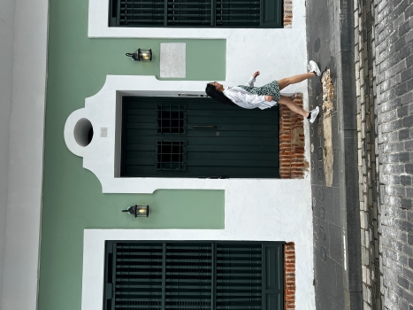

| About Me
Hello there! My name is Jenny Li, and I am an aspiring UI/UX Designer and Web Developer, based in New York City.
Previously in architectural design transitioning to product design, I have a knack for visual storytelling and the user experience. I draw inspiration from my background in architecture—the human interaction with their surrounding environment—to create intuitive experiences and provide real-world solutions. From a physical space to a digital interface, as daily user myself, I realize the importance of functional design and aesthetics when understanding user needs.
When I am not designing, I take interest (and inspiration) from and in the built environment, photography, nature, and immersing myself in different cuisines.


